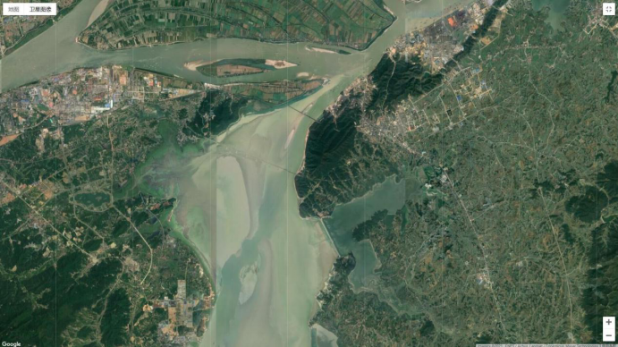
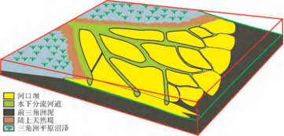
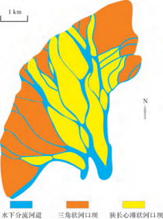

河控三角洲
特点：
河控三角洲沉积是指以河流作用为主，长形，分支流河道、河口坝与沼泽较发育的三角洲形成的沉积体。河控三角洲是以河流作用为主，波浪、潮汐作用微弱，建设作用远大于改造作用的三角洲类型，在我国陆相沉积盆地广泛发育。河控三角洲是河口对河流动力及其作用下泥沙（床沙载荷和悬浮载荷）运动的响应，是挟沙河流泥沙沉积的产物，挟沙河流具有二相、三维、不恒定、非均匀、水沙不平衡等特性，其运动严格受物理规律的支配。
形成形态：
河控取决于河口宽度，河水流速及含砂量。该地带为三角洲体系中砂质沉积物最为丰富、最集中的地区，砂的成分主要是纯净的石英砂，分选磨圆都很好，成熟度也很高。 河控三角洲平面组合及垂向层序特征
1、颜色变化：
（1）下部一般为暗色，反映富含有机质的泥岩特点（前三角洲沉积和浅海沉积）；
（2）向上微浅水、受海水扰动的浅色的前缘砂体；
（3）最上部为夹有浅色砂体（分流河道）的大量暗色层（深灰色至黑色），为广泛沼泽发育的三角洲平原环境。
2、粒度和沉积构造变化：
（1）下部浅海陆棚和前三角洲的泥岩，水平层理及被生物强烈扰动而均化的块状层理；
（2）向上过渡为远砂坝、河口砂坝、席状砂等沉积的细纱和粉砂，发育各种交错层理；
（3）最上部为分流河道、天然堤等形成的细纱、泥岩和煤等，槽状、板状交错层理与块状层理交替出现。
（4）反映从前三角洲到三角洲前缘再到三角洲平原水动力活动是从低能~高能~能量多变的特点。
3、自下而上沉积相标志：
（1）沉积物颜色由暗变淡（青灰—灰）再变褐黄；
（2）沉积物粒度由细变粗再变粗；
（3）沉积物分选性由差变好再变差；
（4）粘土矿物、有机质、微量元素含量由多变少再变多；
（5）构造由水平变波状和交错再变水平；
（6）海相生物向上变少，陆相生物向上变多；
（7）生物钻穴见于三角洲层序的下部，植物根系出现于顶部；
例如松辽盆地北部葡萄花油层沉积时期基底整体一致缓慢沉降地形十分平缓，盆地气候相对干旱湖面快速大规模收缩水体浅水深通常不超过10m。在此背景下形成了北部富有特色的大型河控浅水三角洲沉积体系。 （来源：百度百科）
典型的河控三角洲：
1、鄱阳湖
鄱阳湖位于长江以南，江西省北部，由赣江、抚河、修水、信江、饶河五河汇入，赣江过南昌后分西、 北、中、南四支入湖，鄱阳湖在全新世晚期发育三角洲体系，而距今 1700 年前～250 年前之间的破坏型三角洲沉积，250年前至今为高建设型河控三角洲沉积。目前鄱阳湖处于湖盆充填阶段，湖水较浅，地形坡度平缓。
利用现代沉积的卫星照片可以直观的获取单一河口坝砂体的长度、宽度数据，并对长宽比进行计算。通过 Google Earth 软件上鄱阳湖三角洲的卫星照片，以前述的河口坝形态特征对不同类型的单一河口坝进行划分，在鄱阳湖三角洲里共识别出 37 个单一河口坝沉积，其中在三角洲前缘中上部的心滩状河口坝有 18 个，在三角洲前缘下部，因分流河道持续分叉，数量增多，河口坝平面形态主要表现为三角状，河口坝的数量也相应增至 19 个。

沉积过程：
鄱阳湖是朵状河控三角洲，其沉积模式具有一下定性以及定量特征：
(1) 分流河道是河控三角洲前缘的骨骼与血管，其发展演化存在两种主要的形式，即分叉与合并。分叉的原因是在河口处形成的河口坝砂体的阻碍作用，分流河道每分叉一次宽度平均降低 0．72 倍，持续的分叉导致分流河道不断变窄，数量不断增多; 而合并则是分叉的分流河道在向湖盆的延伸过程中，与另外一条分流河道交汇，交汇处的河道宽度可以比上游河道宽度大。
(2) 河控三角洲前缘的河口坝存在两种形式: 一是在分流河道发育的三角洲前缘的中上部，河口坝砂体的侧向发育受到分流河道的限制，形成平面形态类似于辫状河心滩的狭长心滩状河口坝砂体; 二是在三角洲前缘的前部，形成的三角状河口坝砂体，整体上河口坝砂体的长宽比平均为3.28.
① 狭长心滩状河口坝
（狭长心滩状河口坝是指两个长轴端锐角收敛，中心部位宽度大，在平面形态类似于狭长辫状河心滩沉积的河口坝砂体。）
随着三角洲不断进积，河口坝最终出露水面，而分流河道不断向前分叉、合并。河口坝的生长促进了 分流河道的分叉，而新形成的分流河道由于其侵蚀作用则又限制着河口坝砂体的侧向迁移。因此分流河道的发育控制着河口坝的平面形态，狭长心滩状河口坝的长宽比平均为 4．28，其长度与宽度呈极好的线性相关。
② 三角状河口坝
（三角状河口坝是指平面形态呈三角状的河口坝砂体。主要发育在三角洲分流河道与湖岸( 海岸线) 交汇地区，由末端分流河道控制形成。）
在河控三角洲前缘分流河道末端，分流河道变窄变多，直至河道特征消失。末端分流河道在河口处形成一系列三角状河口坝砂体，其形状多为不规则的类三角状砂体，长度与宽度等测量数据之间的相关性差，河口坝长宽比平均为 2．14。随着末端分流河道消失，不同分流河道形成的河口坝将会拼接形成连片扇状砂席，环绕在末端水下分支河道前端。

河控三角洲前缘分流河道与河口坝沉积模式图

鄱阳湖三角洲不同类型河口坝的分布示意图
3、松辽盆地北部永乐地区葡萄花油层
松辽盆地北部永乐地区位于松辽盆地三肇凹陷的最南端，葡萄花油层沉积时期发育典型的浅水湖盆河控三角洲前缘沉积。与经典三角洲沉积模式中三角洲前段发育大规模、厚层层河口砂坝沉积特征存在较大差异，浅水湖盆河控三角洲多形成于地形十分平缓、地层倾角很小，大地构造 背景处于基底整体一致下降的坳陷时期。其前缘亚相砂体广泛分布，并以砂体薄、规模小、多样化为主要特征。
其代表的浅水湖盆河控三角洲前缘沉积特征如下：
1水下分流河道限定性强，顺源、带状、密集展布，构成骨架砂体
2 垂向沉积序列不完整，河口坝不发育，水下薄层砂较发育
3 亚相分异渐变过渡，存在较大范围的近岸区，前三角洲亚相不发育
4 前积作用不明显，以垂向加积为主
浅水湖盆河控三角洲前缘沉积模式如下：
浅水湖盆河控三角洲前缘不同的相位空间位置具有不同的沉积模式，由岸向湖依次发育高低水位间过渡带“近岸沉积”模式、近岸浅水带“河控带状体”模式、中岸中等水深带“水下分流河道末端河控薄层砂”模式和远岸深水带“浪控席状砂”模式。
1 高低水位间过渡带“近岸沉积”模式
高低水位间过渡带对应水下分流河道高低水位间过渡段，其在高水位期处于水下，低水位期处于水上，以近岸的过渡沉积为主。该带水下分流河道表现较为明显的限定性特征，以顺直河型为主，河流作用较强，沉积物质供应充足，形成以水下分流河道砂体为中心的连续、窄带状河控带状体，发育小规模水下薄层砂沉积，顺河道两侧不连续分布，为高水位期水下分流河道溢岸沉积。水下分流河道间湾以大面积 细粒泥质沉积为主。
2 近岸浅水带“河控带状体”模式
近岸浅水带对应水下分流河道近岸浅水段，仍以水下分流河道沉积为主，其具有限定性、半限定性河道及明显水下切蚀能力、河道沉积特征明显等特点。每支水下分流河道构成了由中心向两侧及前方: “水下分流河道→水下薄层砂( 多为泥质粉砂岩)→水下分流间湾( 多为泥岩或粉砂质泥岩) ”的平面微相序列，水下分流河道为该区带的骨架砂体，控制了“河控带状体”的组合特征和内在特征，构成该区带的沉积主体。由于受湖水长期作用，近岸浅水带的水下薄层砂相对高低水位间过渡带更发育、更连续，但仍然发育于分流河道两侧的有限范围内，水下分流河道砂体与薄层砂之间存在明显过渡关系，进一步说明较浅的湖水对河道影响较小，但不可忽略。
3 中岸中等水深带“水下分流河道末端河控薄层砂”模式
由于水深进一步增大，湖水顶托作用进一步增强，湖水对于水下分流河道沉积的改造进一步增强。 中岸中等水深带( 对应水下分流河道中岸中等水深段) 的河流定向水流逐渐呈长扇形扩散，水下分流河道逐渐失去水下切蚀能力和限定性。取而代之的是基本无水下切蚀能力和限定性的水下分流河道末端及其控制的薄层砂( 河口坝或席状砂) 沉积，薄层砂呈较大面积分布，但呈明显的河控性。以水下分流河道末端为中心，向两侧、前方依次为: “水下分流河道末端→水下薄层砂核部( 以粉砂岩为主) →水下薄层砂边缘( 以泥质粉砂岩、粉砂质泥岩为主) →水下分流间湾( 以泥岩为主) ”的递变特征( 图 8) 。这种沉积特征说明此时是湖水相对较深、离岸较远的时期，水下河流能量已经较弱，河流携带的砂质载荷大幅减少、泥质载荷增多; 加之湖底平缓、绝对水深较浅，波浪能量很弱，致使该区仍以河流余能为主，形成水下分流河道末端及其控制的河控薄层砂，二者边界呈现明显渐变过渡关系，甚至无明显边界。
4 远岸深水带“浪控席状砂”模式
远岸深水带对应水下分流河道远岸深水段，主要为浅水湖盆河控三角洲前缘亚相的外前缘区，远离物源，沉积物供给不足，沉积物粒度明显变细。河流作用很不明显，甚至无河道特征。蓄水体作用显著增强，开始出现较大规模的席状砂沉积，且呈明显的“浪控性”，
[参考文献]
[1]齐亚林,赵彦德,邵晓州,楚美娟,左静.河控三角洲生长的动力和沉积模式[J/OL].沉积学报:1-13[2020-11-10].https://doi.org/10.14027/j.issn.1000-0550.2020.029.
[1]段冬平,侯加根,刘钰铭,王成刚,高建.河控三角洲前缘沉积体系定量研究——以鄱阳湖三角洲为例[J].沉积学报,2014,32(02):270-277.